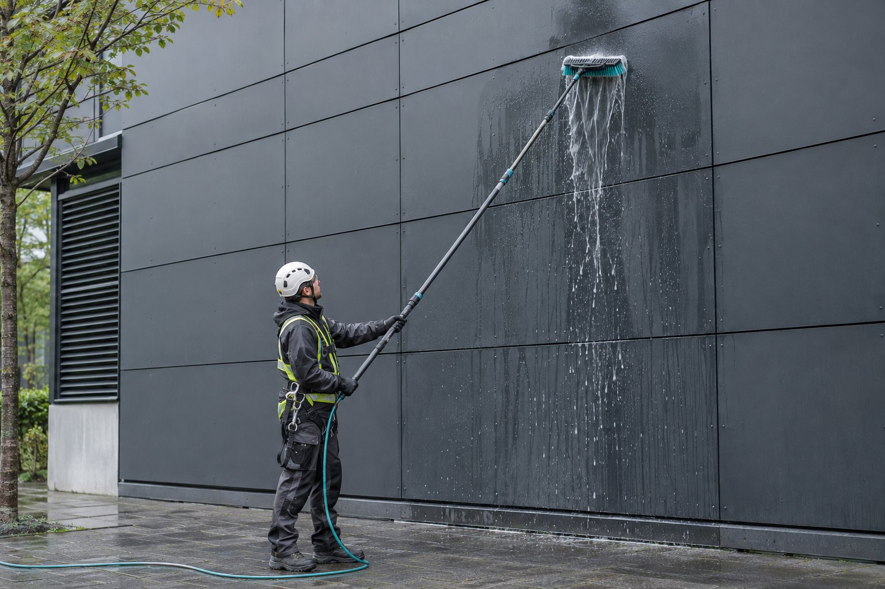

Очистка вентилируемого фасада методом WFP
Чистое остекление, ухоженный фасад и больше света внутри здания.
ВЫСОТА / ДЕТАЛИ / РЕЗУЛЬТАТСначала план.
Сначала план.
Затем работа.
Изучим особенности объекта, уточним доступ к рабочей зоне и согласуем последовательность действий. Объём и состав команды определяются под вашу задачу.

Что входит в работу
- Осмотр объекта и уточнение технической задачи.
- Согласование сметы, сроков и условий доступа.
- Подготовка рабочей зоны и оборудования.
- Выполнение согласованного объёма и приёмка.